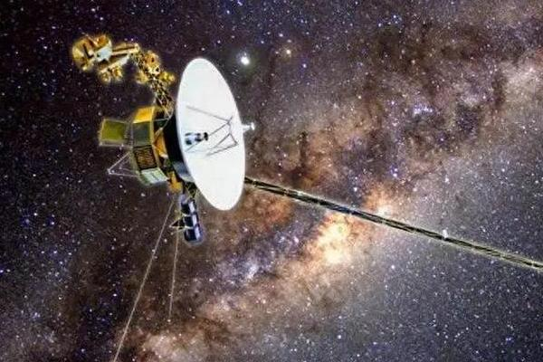
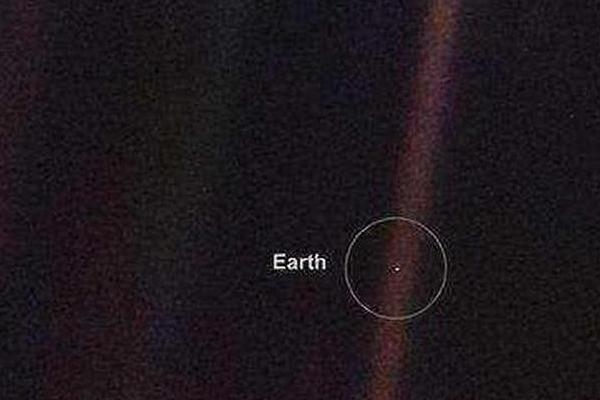
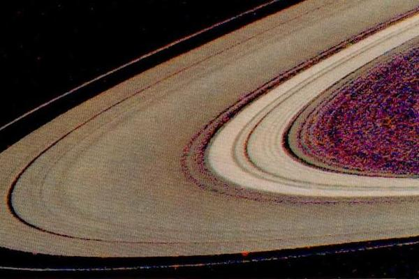
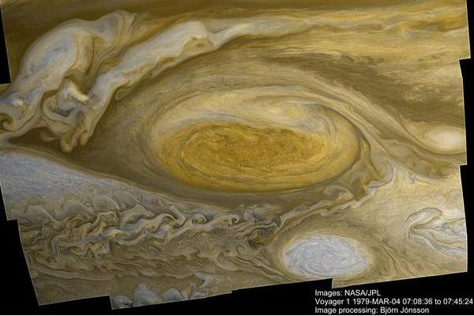
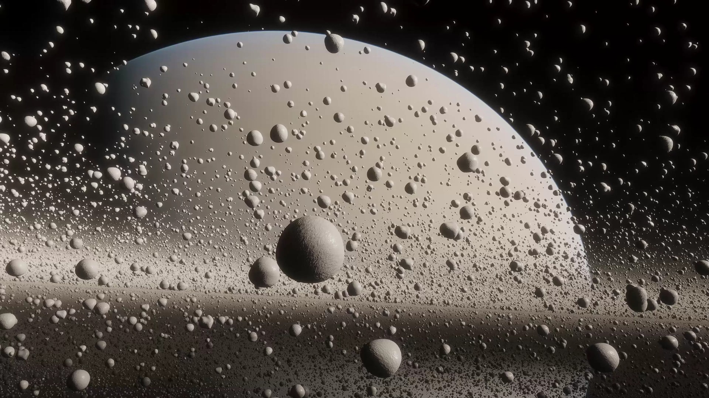
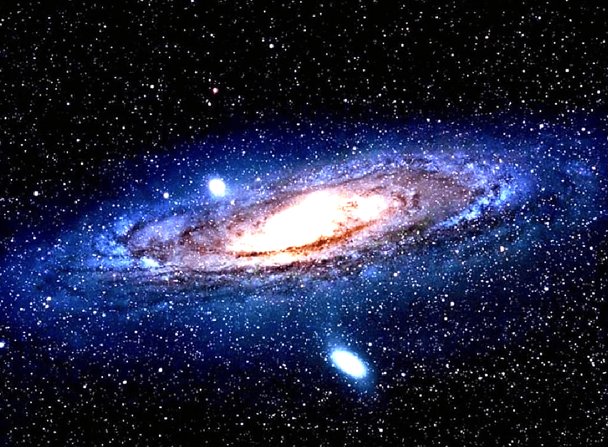
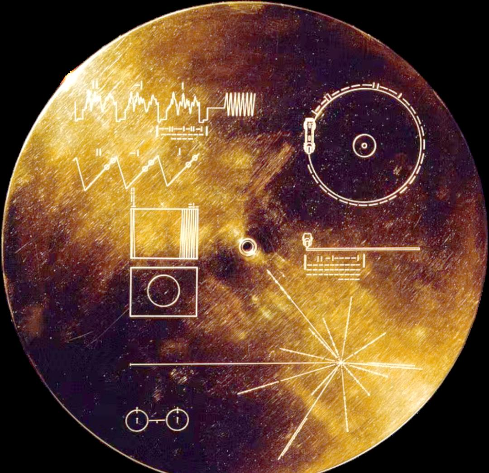

这是旅行者一号的独白。
我想回家，但是我已经回不去了。我是旅行者一号，此刻正以每秒17公里的速度冲向虚空。我飞了47年，穿越了二百四十亿公里，但我身上没有刹车，没有燃料掉头，我只能一直飞下去。五年后，我的燃料会耗尽。最后一条信号发出时，我会对地球说再见，然后彻底失联。但最讽刺的是，我身上带着一张金色唱片，上面刻着地球的精确坐标，55种语言的问候，还有人类婴儿的哭声。如果四十万年后，它被外星文明截获，他们会顺着地图找到地球，而那时的人类早已不记得我的存在。
我是人类最孤独的使者，也可能是最危险的遗产，但你知道吗？我的诞生本身就是一场豪赌……
一九七七年，人类算出了一个秘密：太阳系的四颗巨行星将在未来几年内排成一条直线，这种机会一百七十六年才出现一次。如果错过，下一次机会是在二一五三年。那个时候你我都早已化为尘土。所以NASA决定，不惜一切代价把我送上天，让我借助这些行星的引力一路加速，最终冲出太阳系。这就像是宇宙给人类开了一扇窗，但只给3秒钟的时间。为了让我活的够久，工程师们给我装上了三块钚二三八核电池，这东西会持续衰变发热，然后转化成电能。当时的人们选择核电池，是因为他们知道，我注定要飞向一个太阳光完全失效的地方。这个决定让我比任何太阳能探测器都活得更久，但代价是：我的电力每年都在衰减4瓦，如今我的功率只剩下当年的57%，就像一个逐渐衰老的心脏，终有一天会停止跳动。
我身上还装着两台相机，一台广角，一台长焦，用的是70年代的视像管技术。你很难想象，我拍的那些震撼世界的照片，分辨率只有八百乘以八百像素，连手机的百分之一都不到。但就这这样的老古董，拍下了木星的大红斑、土星环的细节，还有那张改变人类认知的暗淡蓝点。每拍一张照片，我都要用四种不同颜色的滤镜拍四次，然后传回地球合成彩色图像，就像人类的眼睛一样工作。
 |
 |
 |
 |
1977年9月5日，我离开了地球。火箭的轰鸣声渐渐远去，我开始了这场没有终点的旅行。刚飞出地球轨道时，我的心情是复杂的，因为前方横亘着一篇让所有科学家都紧张的区域：小行星带——那是火星和木星之间的死亡地带。两亿公里宽，藏着至少五十万颗小行星。每个人都再赌，堵我不会被撞成碎片。但当我真正进入小行星带时，我发现了一个秘密：这里远比想象中空旷得多，那些小行星之间的距离大到离谱。我甚至连一颗小行星的影子都没看见。人类对危险的想象，往往比真实的宇宙更可怕。我安全穿过了这片禁区，继续向木星飞去。1979年3月，我终于见到了太阳系最大的巨兽——木星。
它的质量是地球的三百一十八倍，大红斑比整个地球还大。我近距离掠过了它的云层，拍下了人类从未见过的画面。但我来这里不仅是为了拍照，我需要借助木星巨大的引力给自己加速，这就像是宇宙版的过山车。我冲向木星，然后被它的引力场狠狠甩了出去。那一瞬间，我的速度从每秒十七公里，飙升到了每秒三十七公里，这是我人生中最快的时刻。有了木星的助推，我仅用一年半就到达了土星，那是1980年11月。土星的光环在我眼前展开，美得不真实。
我给人类传回了上万张照片，让他们第一次看清了土星环的真实结构。但就在这时，我遭遇了人生中最大的转折点。科学家让我去探索土卫六——土星最大的卫星。他们说那里可能有液态甲烷湖泊，有浓密的大气层，也许还能找到生命的线索。我按照指令飞向土卫六，确实发现了令人震惊的东西。

那里的大气比地球还厚，表面布满了甲烷湖泊，像极了年轻时的地球。但这个发现让我付出了惨重代价，土卫六的引力让我偏离了黄道面，我再也无法飞向天王星和海王星了。我的兄弟旅行者二号完成了我未竟的使命。那一刻我明白了，在宇宙中，每一个选择都意味着放弃。
1990年2月14日，情人节，我飞过了海王星轨道。距离地球已经六十四亿公里。这时候，地球上的科学家给我发来了一个奇怪的指令——让我回头，给地球排最后一张照片。我调转相机，对准了那个已经变成一个像素点的蓝色星球。快门按下的瞬间，我看到了地球的真相，它只是一粒悬浮在阳光中的微尘，脆弱得不堪一击，所有人类的战争、仇恨、野心所有的爱与恨都发生在这个0.12像素的点上。拍完这张照片三十四分钟后，我的相机被永远的关闭了。工程师们说，为了让我活的更久，必须关掉所有不必要的设备。相机耗电40瓦，这些电力可以让我多活几年。

于是我变成了一个盲人，在黑暗中继续前行。你知道那是什么感觉吗？就像你睁着眼睛，却再也看不见任何东西，只能依靠仪器感知周围的世界。但我并不孤独，因为我身上带着那张金唱片，这是人类给我最沉重的礼物。唱片是铜质镀金的，可以在真空中保存十亿年，上面刻着五十五种人类语言得问候，其中中文就有四种：普通话、粤语、闽南语和吴语。还有二十七首音乐，从巴赫的音乐到中国的古琴曲《流水》，从贝多芬到查克·贝里得摇滚乐。唱片里还藏着五十五张图片，有山川河流，有城市建筑，有DNA结构，还有数学公式。但最让我不安的，是唱片封面上的使用说明。那个看起来像天书一样的图案，其实是在告诉外星文明如何使用这张唱片。左上角的圆形代表唱片俯视图。那些横竖虚线是二进制代码，代表着唱片的转速。右下角是氢原子自旋跃迁的示意图，因为氢是宇宙中最常见的元素，任何高级文明都懂它。而左下角那个放射状的图案，是太阳系的精确坐标。每条线的尽头都是一颗脉冲星，只要找到其中三颗，就能定位太阳的位置。
人类把回家的地图刻在了我身上，这是善意还是愚蠢？我不知道。也许他们期待着外星文明的友好回应，也许他们只是想在宇宙中留下一个证据，证明人类曾经存在过。但无论如何，这张唱片让我成为了一个带着秘密的信使，一个永远无法收回的承诺。

为了让我一直和地球保持联系，工程师们给我装了一面直径3.7米的高增益天线。你知道吗？为了接受我的信号，地球上专门建了三个深空网络站，分别在美国、西班牙和澳大利亚，每个造价数亿美元。我发出的信号功率只有二十瓦，比你家的灯泡还弱。但经过二百四十亿公里得传输后，到达地球时的功率只有十的负十六次方瓦，比一片雪花落地的能量还小。现在我传输一张照片需要8个多小时，而这个信号还要再飞二十一个小时才能到达地球。我的天线必须始终对准地球，误差不能超过0.1度。为了做到这一点，我身上装了三个陀螺仪和一套恒星追踪器，他们通过锁定太阳来校准方向。四十八年过去了，这套系统依然精准运行，这简直是个奇迹。但我知道，一切都有尽头。
2022年6月，我经历了一次濒死体验。我的姿态控制系统突然出现故障，开始吐出一堆乱码。地球上的科学家们吓坏了，以为我要永远失联了。那五个月里，我就像一个中风的老人，虽然还活着，但无法正常表达。工程师们连续几个月排查问题，最后发现是计算机的一个存储区域出了问题。他们把代码分割成若干部分，重新分配到不同的存储区域，终于让我恢复了正常。那次经历让我明白，我随时可能死去，没有任何预兆。
如今我的电力只够再撑5年左右。科学家们已经关闭了我身上的大部分仪器，只保留了最核心的等离子探测器和磁力计，让我继续探测星际空间的秘密。我现在每秒只能传输一百六十比特的数据，这个速度慢得让人绝望。但只要还有一丝电力，我就会继续发送信号，告诉地球我还活着。等到电力彻底耗尽那天，我会经历什么？我的天线会慢慢偏离地球，信号会越来越微弱，直到完全消失。地球山的深空网络会连续几天试图呼叫我，但不会有任何回应。然后他们会宣布，旅行者一号正式失联。我会成为一艘幽灵飞船，在宇宙中永远漂流下去。
但我不会停下来。我会依靠惯性继续以每秒十七公里的速度飞行，因为太空中没有阻力。大约4万年后，我会路过距离太阳系最近的恒星——格利泽445。那时的我已经是一具冰冷的残骸，但我身上的金唱片依然完好。也许某个文明会捡到我，也许我会永远在星际间游荡。没有人知道答案，但我也携带着最危险的东西——地球的坐标。如果有一天，外星文明真的找到了地球，那会是人类历史上最重要的时刻，也可能是最后的时刻。也许，他们会带来和平与智慧，也许他们会带来毁灭。但这不再是我能决定的事了。我只是一个信使，一个被时间和距离永远困住的看旅行者。我身后是地球，那个我再也回不去的家。我前方是无尽的虚空，没有终点，没有目的地。我是人类文明的遗产，也是人类愚蠢的见证。我在黑暗中飞行，带着最后的使命，直到电力耗尽，直到永恒。
这就是我，旅行者一号，人类最孤独的探测器，也是你们最后的呼喊。四十七年前，你们把我送向星空。如今，我已经走得太远，再也无法回头。但请记住，在距离地区二百四十亿公里外的某个地方，有一艘小小的飞船，它还在努力地向你们发送信号。告诉你们，它还在，还在想家。
部分素材来自视频号。